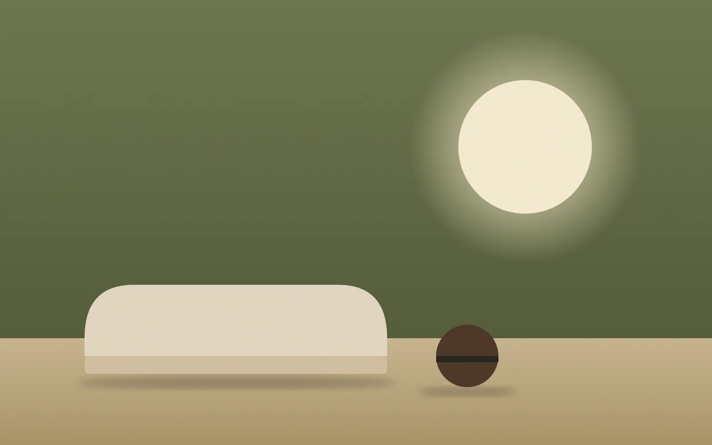
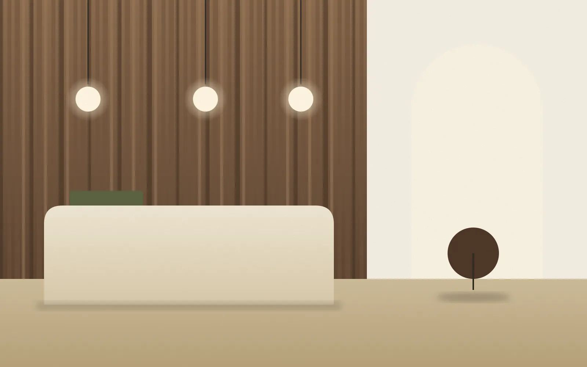
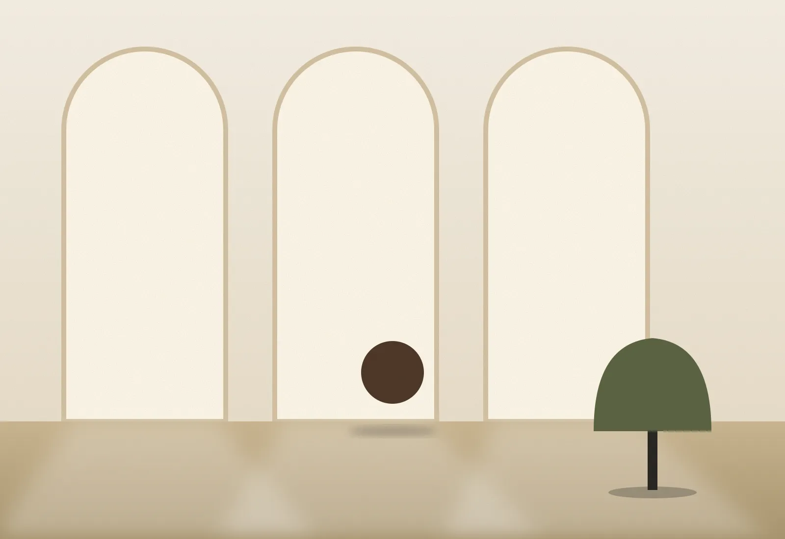
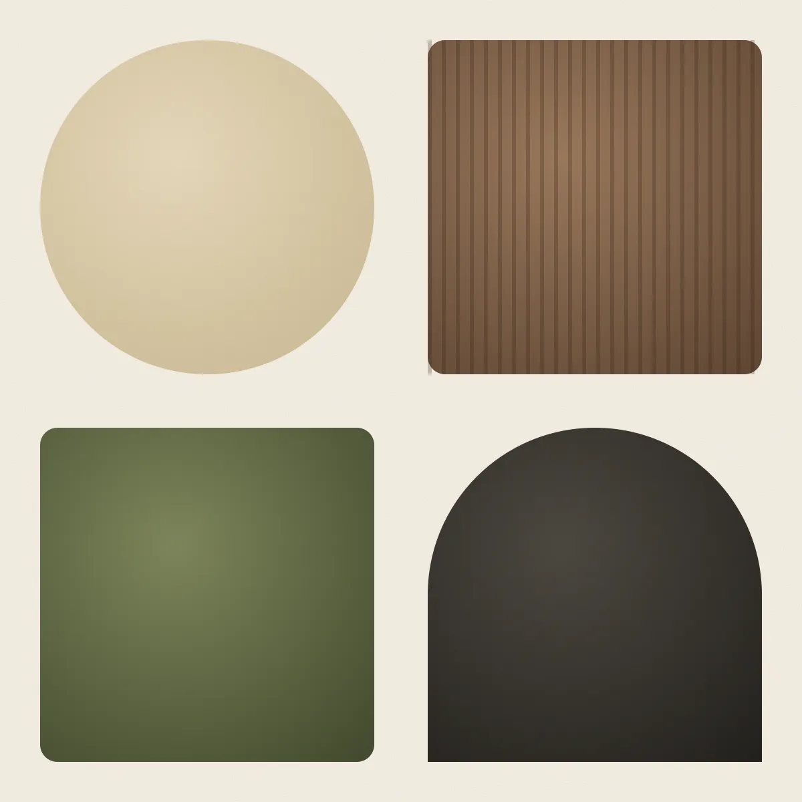
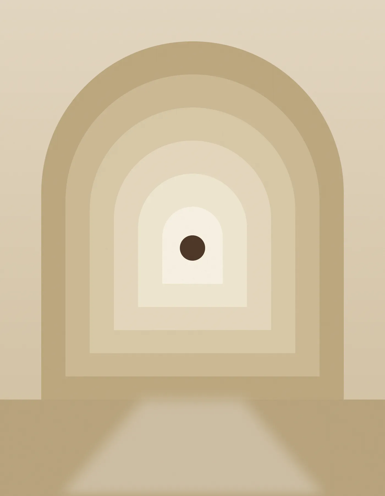

A clínica
Um consultório que parece uma casa bem projetada.
A Orbe nasceu da ideia de que ir ao dentista pode ser menos tenso quando o espaço e o tempo de consulta são pensados com cuidado.

O nome vem da forma que se repete no projeto: o círculo. Aparece nas luminárias, nos arcos, na logomarca e na maneira de trabalhar, com um plano que fecha o ciclo entre avaliação, tratamento e manutenção.
A equipe é pequena de propósito. Isso permite que os profissionais conheçam cada paciente e conversem entre si sobre cada caso, sem que informações se percam pelo caminho.
Texto institucional demonstrativo.
Como trabalhamos
- Tempo de consulta
- Cada horário é pensado para conversar e examinar sem correria. Ninguém sai sem entender o que foi visto e o que vem a seguir.
- Plano antes de procedimento
- Antes de qualquer intervenção, o plano é explicado: opções, custos, prazos estimados e manutenção.
- Menos é mais
- Quando uma alternativa conservadora resolve, ela vem primeiro. Intervenções maiores entram quando fazem sentido clínico.
- Espaço que acalma
- Materiais naturais, luz suave e pouco ruído visual. A arquitetura faz parte do cuidado.
Ambientes
Três espaços, um mesmo ritmo.

Madeira ripada, balcão baixo e luz quente. A recepção funciona como uma sala de entrada, sem fila e sem barulho de impressoras.
Um canto verde-oliva com assentos baixos e uma luminária redonda. Pensada para esperar com calma e, quando possível, nem esperar.

Janelas em arco trazem luz natural para dentro. Equipamentos ficam recolhidos para que a sala não pareça um laboratório.


